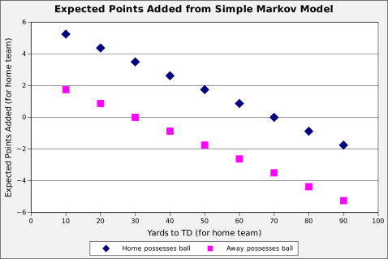
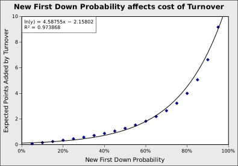
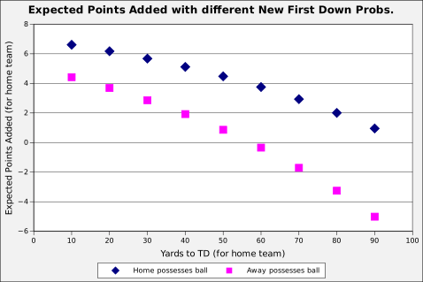

Source: Brian Burke's Advanced Football Analytics
Expected Points Added is way to to measure the effect of each play in American football. In this report, I show that EPA is not fundamental. It is derivable from another value: the probability of a team getting a new first down. EPA is not bad — it is a great first approximation and was groundbreaking for its time. But it is imprecise at extremes, which probably affects playoff predictions. I'd like to see more work in football analytics on the new first down probability.
Expected Point Added is the expected value of the next score, given the current state of the football game. Points scored by the team with the ball are treated as positive numbers and, by the other team, as negative.
Brian Burke, a pioneer in football analytics, calculated it for any yardline, down, and distance. A team with the ball and first-and-10 on their opponent's 10 yardline is almost sure to score 7 points and has an EPA of 4.2. (It would be higher, except Burke subtracts the EPA of the other team receiving the kickoff at their own 30 yard line. (I'm not sure how he does that, because it makes his definition recursive! It creates problems, as we'll see later.)) At the 50 yardline, the EPA falls to 1.8. And at their own 10 yardline, it is more likely that the other team will score next, and the EPA is -0.2. Obviously, as downs increase, the EPA decreases. Likewise, as distance-to-go decreases, EPA increases.
Source: Brian Burke's Advanced Football Analytics
Burke calculated these values using 10 years of NFL data. He only used "non-junk" plays, where junk plays are ones near the end of the half or when the score means the game is no longer competitive.
EPA is very useful. Brian Burke ranked players based on how their plays changed the EPA. ESPN used it as the basis for EPSN's Football Power Index. (Brian Burke worked at EPSN at the time it was released, so I assume he was integral to its development.) Many others analytics have been based on it.
When looking at Burke's graphs, the first thing that stood out to me is how linear they are! (This was noticed by others too.) There is some bend in the first and final 10 yards, but for most of the field each additional yard is worth a fixed value of expected points. Before I had seen these graphs, I had expected the graph to increase exponentially as a team got closer to the endzone, but that isn't the case.
A consequence of that linearity is that a turnover has about the same value everywhere on the field. If a team turns it over at the 50 yard line, the EPA switches from +1.8 to -1.8, a difference of 3.6. If they turn it over on the 10 yard line, the EPA switches from +4.2 to -0.2, a difference of 4.4. That is much less variation than I had expected before I saw these graphs. I had expected a turnover near the goal line to be exceptionally more valuable. In actuality, the value only varies by about 20%.
I've been exploring an extremely simple Markov model that reproduces those features of the EPA. As a result, I no longer see EPA as fundamental. I'll explain the model and then talk further about its implications.
In my simple model, the team with a ball either advances 10 yards with a new first down or turns the ball over on the spot. That's it. Each team has its own probability of making a new first down. Thus, there are only 2 parameters to the model. (For those familiar, yes, the Football Outsiders call the probability of making a new first down the "Drive Success Rate". I'm not going to use that name because it is misleading: the new first down probability applies to a series of downs, not the drive.)
In the model, each first down is on a yardline that is a multiple of 10. So, the home team's 10, 20, 30, 40, midfield, or away team's 40, 30, 20, or 10 yardline. Thus, the team with the ball will either advanced 10 yards or turnover the ball on that yardline. If a team advances 10 yards on their opponent's 10 yard line, they score a touchdown worth 7 points and the other team gets the ball on their 30 yardline. (Burke used the 29 yardline, which I've rounded to 30.)
It is pretty easy to build up the equations that define this model. We'll need some definitions first. EPA(Team, YardsToTD) is the expected points added for the home team, where the argument "Team" is who currently possesses the ball, either "Home" or "Away", and the argument "YardsToTD" is how far the team with the ball has to go for a touchdown. The model's parameters are Ph and Pa, the probability of a new first down by the home and away teams.
The equations are:
| EPA(Home, 10) | = Ph * (7 + EPA(Away, 30)) | + (1-Ph) * EPA(Away, 90) |
| EPA(Home, 20) | = Ph * EPA(Home, 10) | + (1-Ph) * EPA(Away, 80) |
| EPA(Home, 30) | = Ph * EPA(Home, 20) | + (1-Ph) * EPA(Away, 70) |
| ... | ||
| EPA(Home, 90) | = Ph * EPA(Home, 80) | + (1-Ph) * EPA(Away, 10) |
| EPA(Away, 10) | = Pa * (-7 + EPA(Home, 30) | + (1-Pa) * EPA(Home, 90) |
| EPA(Away, 20) | = Pa * EPA(Away, 10) | + (1-Pa) * EPA(Home, 80) |
| ... | ||
| EPA(Away, 90) | = Pa * EPA(Away, 80) | + (1-Pa) * EPA(Home, 10) |
These simultaneous equations are all linear in terms of the 18 values for EPA(?,?). So, given a particular Ph and Pa, we can put the coefficients into a matrix and solve for the 18 values of EPA(?,?). If we assign Ph and Pa both the value of 0.8, we get this graph of EPA:
It is linear! In fact, when Ph is equal to Pa, this graph is always linear. I assume it is because infinite sums of terms balance out. I believe this explains why Burke's EPA graph is linear.
While the graph is always linear, the lines do change. As the probability of a new first down increases, so does the separation between the lines. That is, the cost of a turnover increases. I chose the value 0.8 for the probability of a new first down, because the turnover cost was similar to Burke's value.
When we increase (or decrease) the probability of a new first down, the turnover cost grows (or shrinks) exponentially. That is, when offenses are likely to get a first down, the cost of a turnover grows exponentially. I believe this is a weakness of having a fixed EPA for all teams. That fixed EPA says the cost of turnover is equal to the turnover between average opponents. That's a great first approximation, but is probably inaccurate for matchups with very bad or very good teams. And we want to analyze the very good teams that play in the playoffs.
What happens when Ph is not equal to Pa? This is the very common situation that one team is better than the other. In this case, the graph is not symmetric and it may not even exist! It doesn't exist when the kickoff results in a positive expected value for the team that kicked off. This is not hard to achieve: they just kicked to the other team's 30 yard line and, if there is a turnover, they are close to a touchdown. If a turnover and going 30 yards is more likely than the other team going 70 yards, the system of equations tends to infinity!
If we ignore the effect of kickoff and only look at the next score, we end up with graphs like this where Ph = 0.85 and Pa = 0.75:
The graph is not symmetric and not linear. The EPA of each additional yard gained is different at each yardline and different for each team. Any fixed EPA is going to result in distortions. And any estimation of the value of plays and players based on that will be off.
After I started to write this report, I found that Keith Goldner of Drive By Football also has a Markov model. His model is trying to be realistic to a game: the latest version has over 1,000 states and its state transitions are based on all plays made by all teams in the NFL over a seven-year period. It has a different goal than my Markov model, with its 18 states and 2 parameters. Interestingly, Goldner used his Markov model to calculate expected points, which also resulted in a linear graph.
The existance of another Markov model doesn't change my thesis. The fixed EPA seems to be derivable from a simple process and while a fixed EPA is a great first approximation, it is probably imprecise in situations we care about, like measuring playoff-calibre teams.
My model depends on only one parameter per team: the team's probability of going 10 yards for a new first down. This may be the most important measure of a team. Football Outsiders (mis)named this the "Drive Success Rate". (To be precise, Drive Success Rate counts a new first down or a TD as a success. I don't think scoring from the 1-yard line is equivalent to going 10 yards, but that's a finer point to argue later.) I think the new first down probability is understudied, as there are only a few webpages that mention it. I agree with this author when he says "I can’t think of a stat that gives you more bang for the buck than [Drive Success Rate].".
I think football analytics should look into the new first down probability. I'd love to see how the lengths of actual drives measures up to that predicted by the new first down probability. I'd love to see how home field advantage affects new-first-down probability. I'd love to see how a good (or bad) defense affects an offense's new-first-down probability. And, lastly, I'd love to see these pieces stitched together to see how new-first-down probability can be used to predict game outcomes.
The good news is that first downs happen often — NFL teams have about 17 per game — which is much more often than wins and losses. This means that this approach may lead to accurate predictions earlier in the season. And, if it is better than a fixed EPA at evaluating strong teams, it will be more accurate late in the season too.
— Michael Nahas, Oct 6, 2023